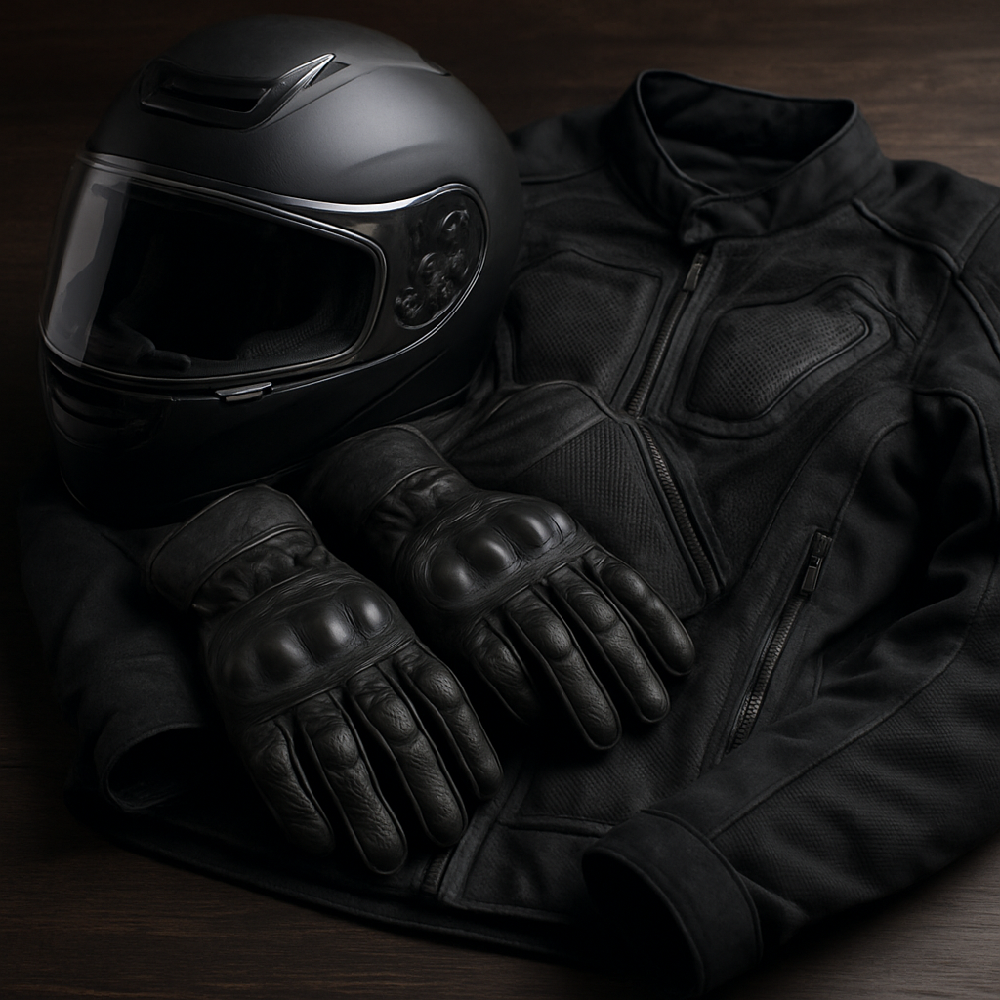
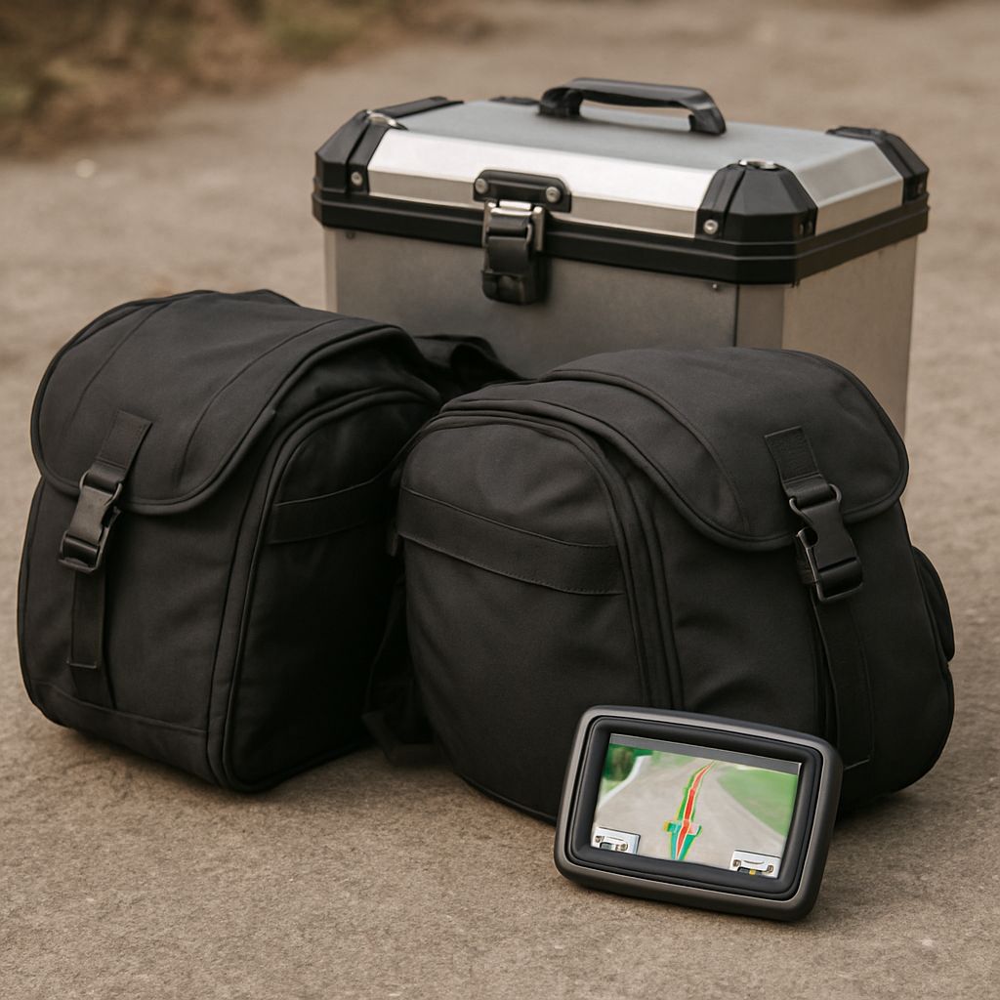

Sua presença fez toda a diferença. Agora, convido você a fazer parte desta jornada de transformação!
Vídeo será adicionado em breve
Clique aqui quando o link do YouTube estiver disponível
Como você pode contribuir com nossa missão
Nosso objetivo é continuar oferecendo workshops de qualidade, gratuitos e acessíveis a todos aqueles que buscam crescimento pessoal e desenvolvimento ao lado de Deus. Você pode nos ajudar de três maneiras especiais:
Orando por Nós
Suas orações são essenciais para nos guiar enquanto trabalhamos para ajudar o máximo de pessoas a desenvolver um relacionamento íntimo com nosso Pai.
Levando Workshops para seu Grupo
Ao levar um de nossos workshops para seu grupo, você expande o alcance dessa jornada e permite que mais pessoas experimentem a transformação.
Moto Missionária
Ajude-nos a adquirir uma moto para levar esperança e transformação para famílias em locais de difícil acesso em todo Goiás.
Meta: R$ 38.000 | Arrecadado: R$ 0
Gratidão Infinita
Agradecemos profundamente por seu apoio contínuo e por fazer parte desta comunidade de crescimento e transformação. Juntos, podemos criar um impacto positivo e duradouro na vida de muitos outros.
Dúvidas ou sugestões?
Projeto Moto Missionária
Levando a Palavra sobre Duas Rodas
Alcançando Vidas, Um Caminho por Vez
Minha missão é levar uma palavra de esperança e restauração para as famílias através de palestras sobre relacionamento familiar. Hoje, meu coração arde com um sonho: expandir este trabalho para os cantos mais distantes e necessitados do nosso estado de Goiás.
A Visão
Muitas igrejas e comunidades em cidades menores ou de difícil acesso anseiam por receber este ministério. A solução é uma Moto Missionária - um veículo ágil que nos permitirá:
Garantir o acesso a cidades distantes, com poucos ônibus diariamente
Reduzir custos de deslocamento e viagem
Alcançar vilarejos e zonas rurais de difícil acesso
Ter flexibilidade para permanecer mais tempo em cada comunidade
Progresso do Projeto
R$ 1.000 arrecadadosMeta: R$ 38.000
Do Sonho à Realidade - Nossa Jornada Juntos
Toque na etapa desejada para saber mais
Fase 1: Aquisição da Moto
R$ 8.000 - R$ 12.000
Objetivo: Adquirir uma moto confiável e adequada para viagens missionárias, garantindo segurança e durabilidade.
Ações: Pesquisa de mercado, inspeção mecânica, compra e manutenção preventiva.
Aguardando
Fase 2: Documentação e Legalização
R$ 500 - R$ 1.000
Objetivo: Regularizar a moto junto aos órgãos de trânsito, garantindo que ela esteja apta a rodar em qualquer lugar.
Ações: Transferência de propriedade, licenciamento, emplacamento e seguro obrigatório.
Aguardando

Fase 3: Equipamentos de Segurança
R$ 1.000 - R$ 2.000
Objetivo: Adquirir equipamentos de segurança essenciais para o piloto e para a moto, garantindo viagens seguras.
Ações: Compra de capacete, jaqueta, luvas, botas, e itens de segurança para a moto (cavalete, protetores, etc.).
Aguardando

Fase 4: Acessórios de Viagem
R$ 500 - R$ 1.500
Objetivo: Equipar a moto com acessórios que facilitem as viagens longas e o transporte de materiais missionários.
Ações: Instalação de bauleto, alforges, suporte para celular/GPS, carregador USB e iluminação auxiliar.
Aguardando
Faça Parte Desta Missão!
Sua contribuição, de qualquer valor, é um ato de fé e um investimento direto em famílias que serão alcançadas por este ministério.
"Cada um contribua segundo propôs no seu coração; não com tristeza, ou por necessidade; porque Deus ama ao que dá com alegria."
- 2 Coríntios 9:7
PIX
Chave: fellipe.roscelli@gmail.com
Dúvidas?
Entre em contato conosco
×
Obrigado por Orar por Nós!
Sua oração é um presente precioso. Pedimos especialmente por:
Sabedoria para guiar as pessoas em sua jornada espiritual
Discernimento para criar conteúdo que realmente transforme vidas